OFERTA ESPECIAL DISPONÍVEL SOMENTE HOJE
+120 ATLAS Visuais de Endodontia Clínica
COM ABERTURAS CORONÁRIAS, DIAGNÓSTICO PULPAR, LIMAS, IRRIGAÇÃO E ETAPAS CLÍNICAS ORGANIZADAS PARA VOCÊ ESTUDAR, REVISAR E CONSULTAR

Tenha no celular +120 ATLAS visuais para compreender e consultar os principais conteúdos de Endodontia Clínica, incluindo anatomia interna e abertura dente a dente, diagnóstico pulpar e periapical (AAE), isolamento absoluto, odontometria, instrumentação manual e rotatória, irrigação, medicação intracanal, obturação e manejo de acidentes.
Você recebe tudo imediatamente no seu WhatsAppe no seu
WhatsAppe no seu e-mail
e-mail
VEJA POR DENTRO O MATERIAL QUE VOCÊ VAI RECEBER
Prévia da biblioteca com +120 ATLAS Visuais de Endodontia Clínica, organizados para que você possa visualizar rapidamente aberturas coronárias, anatomia interna, diagnóstico pulpar, calibres ISO de limas, protocolos de irrigação, sequências clínicas e os principais conceitos da área.
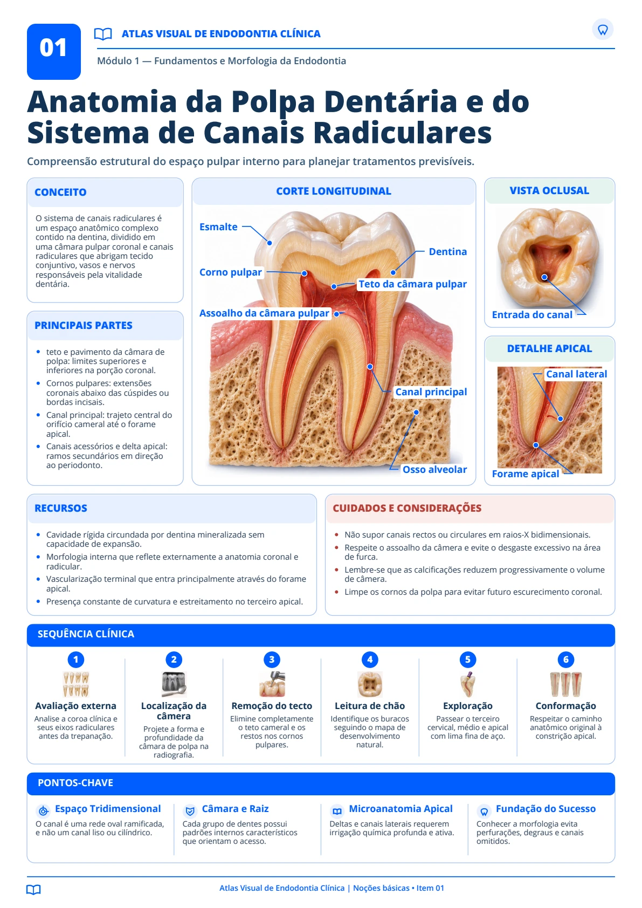

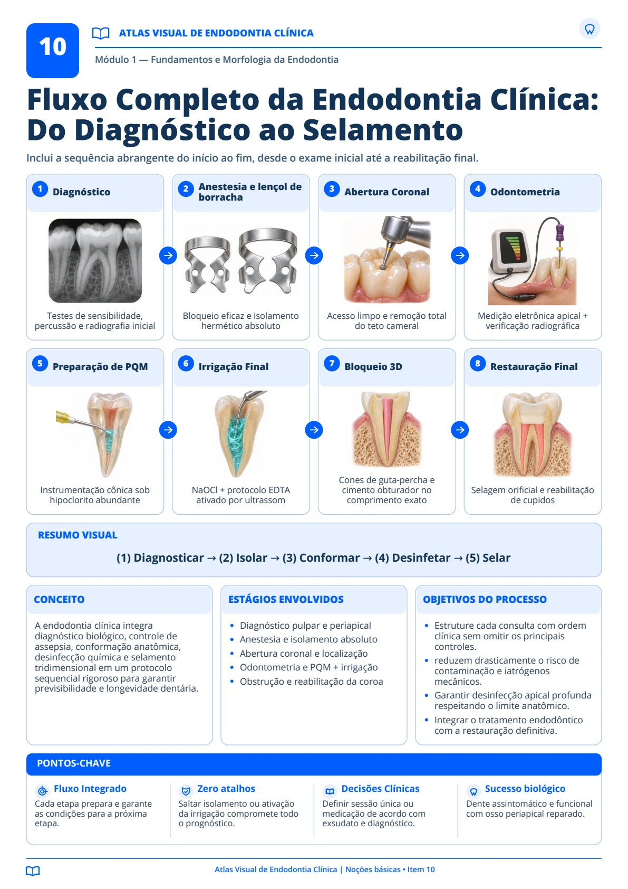
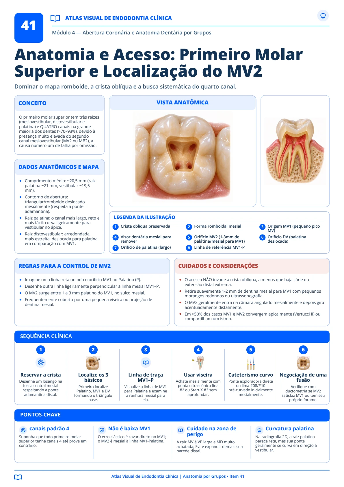
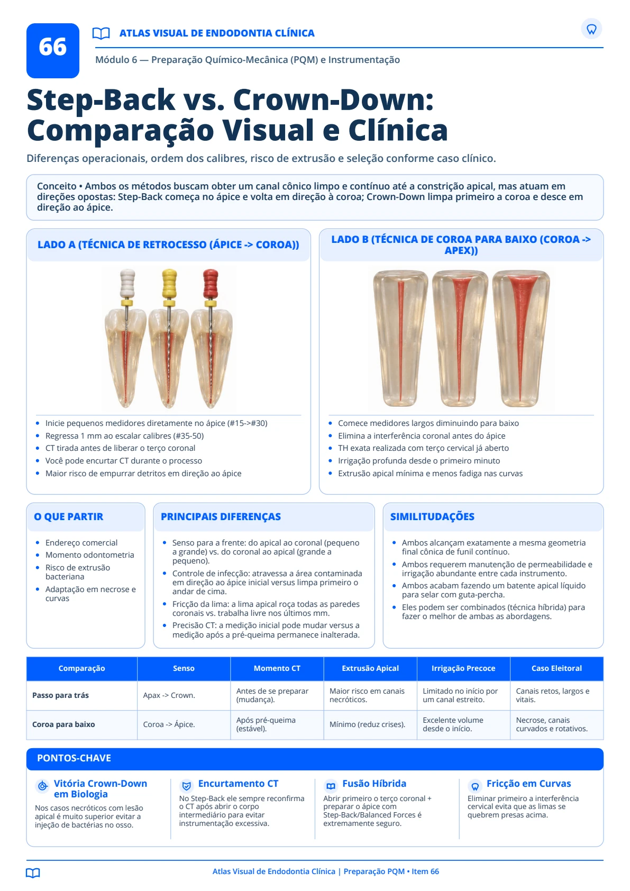
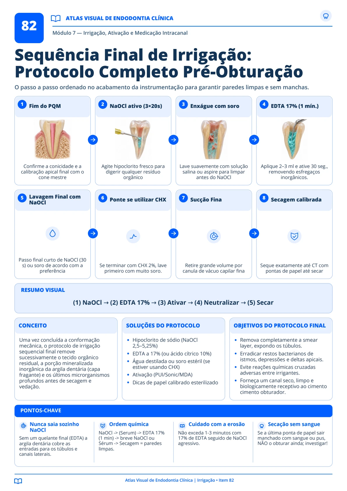
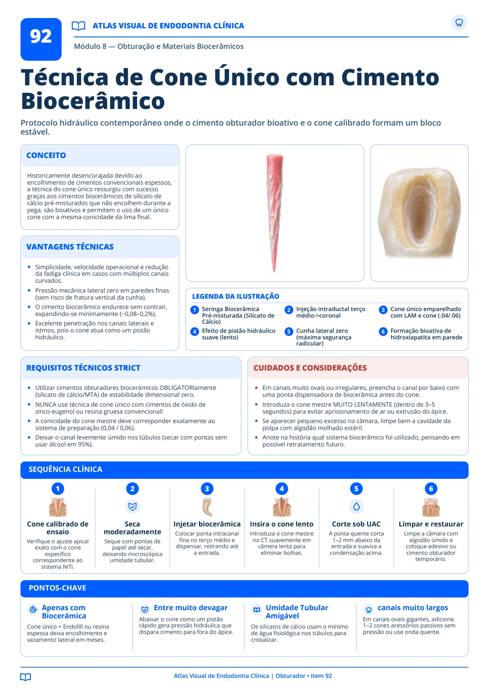
Chega de perder tempo procurando a mesma informação em slides, anotações e PDFs diferentes.
Com o Atlas Visual de Endodontia Clínica, você encontra rapidamente o tema que precisa revisar e já pode consultar:
- Anatomia interna e abertura coronária dente a dente
- Diagnóstico pulpar e periapical (Consenso AAE)
- Isolamento absoluto e seleção de grampos
- Odontometria eletrônica (LAE) e radiográfica
- Classificações importantes (Vertucci, Krasner-Rankow, Schneider)
- Instrumentação manual, rotatória e reciprocante
- Protocolos de irrigação e medicação intracanal
- Técnicas de obturação e cimentos biocerâmicos
- Erros, acidentes e protocolos de resolução
- Resumos para consulta rápida na clínica

Basta abrir, encontrar o tema que você precisa e usar o ATLAS como referência para estudar, revisar ou consultar antes de atender.
IDEAL PARA QUEM ESTUDA OU ESTÁ COMEÇANDO A SE APROFUNDAR EM ENDODONTIA CLÍNICA
Se você é estudante de Odontologia, recém-formado ou está iniciando sua prática clínica na área de Endodontia, utilize este material para:
- Revisar a forma de abertura coronária e o número de canais antes de entrar na clínica ou na prova.
- Diferenciar com segurança pulpite reversível, irreversível, necrose e periodontites apicais.
- Identificar visualmente limas ISO por cores, brocas Gates-Glidden, Largo e grampos de isolamento.
- Comparar técnicas Step-Back vs. Crown-Down e instrumentação rotatória vs. reciprocante.
- Localizar canais complexos como o MV2 em molares superiores ou o segundo canal em incisivos inferiores.
- Dominar os protocolos de irrigação (NaOCl, EDTA, Clorexidina) sem erros de interação química.
- Organizar sequências clínicas de odontometria, preparo e obturação que costumam ficar espalhadas.
- Consultar classificações (Vertucci, Krasner-Rankow, trauma IADT) sem precisar procurar em livros extensos.
- Saber como prevenir e resolver degraus, perfurações e fratura de instrumentos.
- Consultar rapidamente pelo celular minutos antes de atender o seu paciente.
Se você se identificou com pelo menos duas dessas situações, o Atlas Visual de Endodontia Clínica foi organizado para facilitar sua rotina de estudo, revisão e prática clínica.
QUANTAS VEZES VOCÊ JÁ SE CONFUNDIU COM A ABERTURA, O DIAGNÓSTICO PULPAR OU A SEQUÊNCIA DE LIMAS E TEVE QUE PROCURAR TUDO DE NOVO?
⏰ Aproveite a oferta por tempo limitado
VEJA O QUE ESTÃO DIZENDO SOBRE O MATERIAL
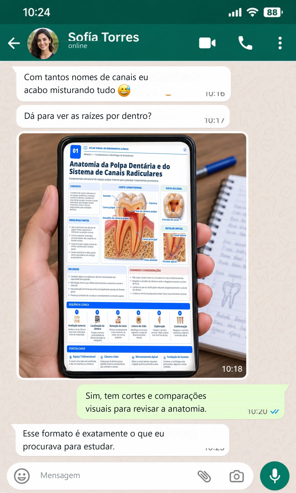
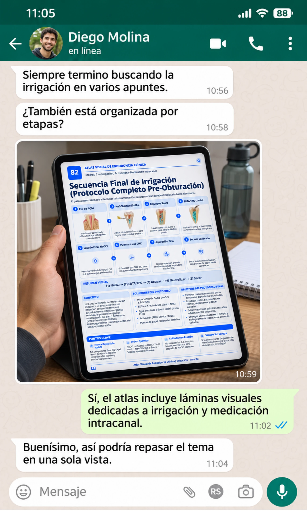
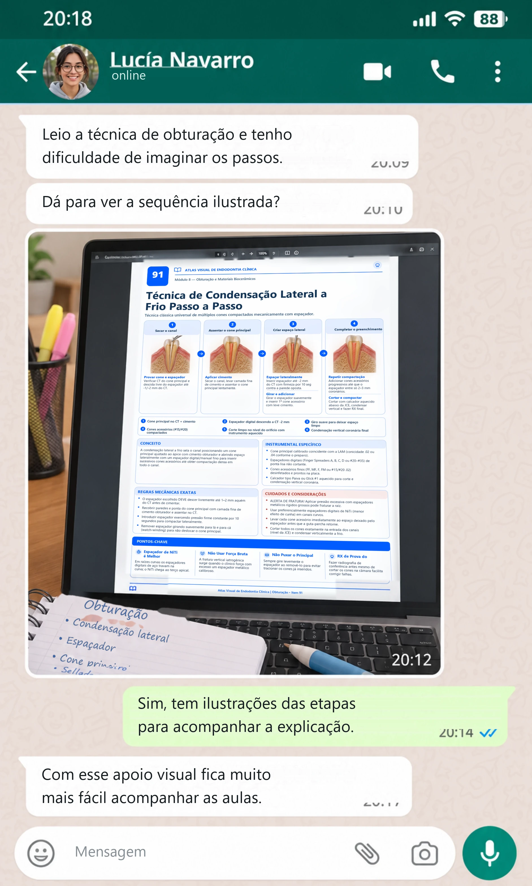

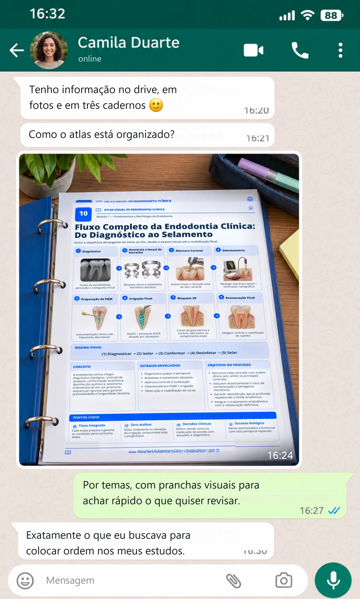
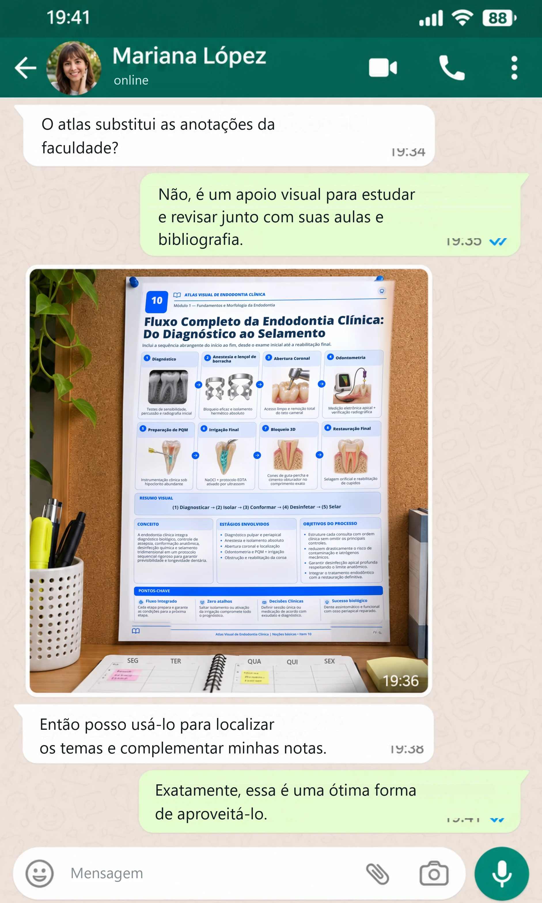


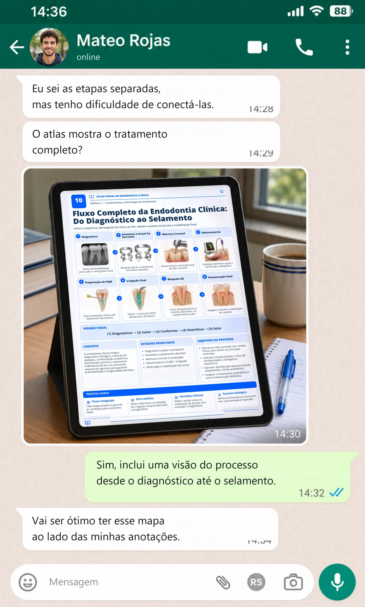

⚡ Acesso imediato
VEJA TUDO O QUE VOCÊ VAI RECEBER
- +120 ATLAS Visuais de Endodontia Clínica
- Conteúdo organizado em 10 módulos clínicos
- Anatomia da cavidade pulpar e sistema de canais
- Classificação de Vertucci (Tipos I a VIII) e istmos
- Leis de Krasner e Rankow para localização de canais
- Diagnóstico pulpar e periapical (Consenso AAE)
- Testes térmicos, teste elétrico, percussão e Técnica de Clark (SLOB)
- Anestesia em dente inflamado (hot tooth) e técnicas suplementares
- Isolamento absoluto, grampos e reconstrução pré-endodôntica
- Manejo de urgências endodônticas, drenagem e farmacologia
- Abertura coronária passo a passo em incisivos, caninos, pré-molares e molares
- Localização do canal MV2 (MB2) e canais em 'C'
- Odontometria eletrônica (LAE), técnica de Ingle e constrição CDC
- Patência apical, Glide Path, LAI e Lima Apical Anatômica (LAA/LAM)
- Cinemática manual e Forças Balanceadas de Roane
- Técnica Step-Back vs. Técnica Crown-Down
- Instrumentação rotatória contínua vs. reciprocante em NiTi
- Irrigação com Hipoclorito de Sódio, EDTA 17% e Clorexidina 2%
- Ativação ultrassônica passiva (PUI), sônica e dinâmica manual
- Medicação intracanal com Hidróxido de Cálcio Ca(OH)₂ e pastas
- Prova do cone principal, condensação lateral, termoplastificada e cone único
- Cimentos biocerâmicos (MTA, Biodentine e pré-misturados)
- Apicogênese, apicificação, revascularização e traumatismo dentário (IADT)
- Reabsorções, dente trincado, lesões endo-perio e endopediatria
- Retratamento, remoção de pinos, perfurações, degraus e cirurgia parendodôntica
- Acesso imediato e vitalício pelo celular, tablet ou computador
- Arquivos preparados em alta definição para leitura digital e impressão
E NÃO PARA POR AÍ…
VOCÊ TAMBÉM RECEBE
🎁 3 BÔNUS EXCLUSIVOS
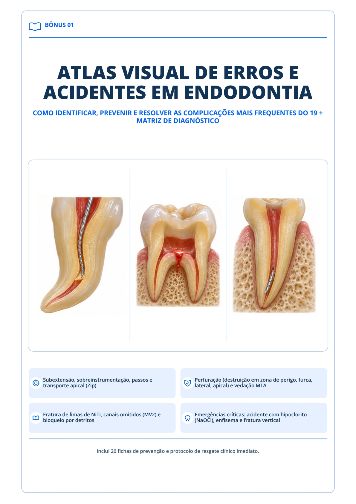
ATLAS VISUAL DE ERROS E ACIDENTES EM ENDODONTIA
Uma seleção de pranchas visuais dedicada a como prevenir e resolver degraus, perfurações, transporte apical, fratura de limas e extravasamento de hipoclorito.
Valor: R$ 47,00GRÁTIS
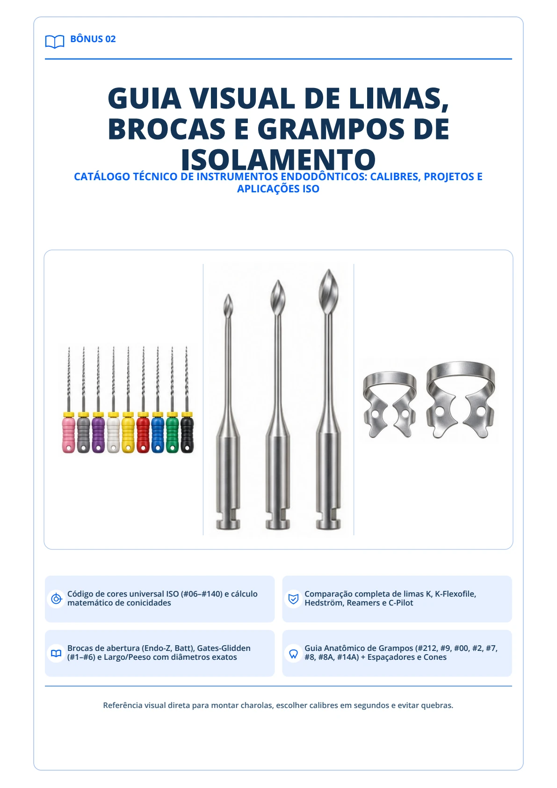
GUIA VISUAL DE LIMAS, BROCAS E GRAMPOS DE ISOLAMENTO
Uma biblioteca complementar para identificar por cores e calibres ISO as limas manuais, rotatórias, brocas Gates/Largo/Endo-Z e o grampo exato para cada dente.
Valor: R$ 37,00GRÁTIS
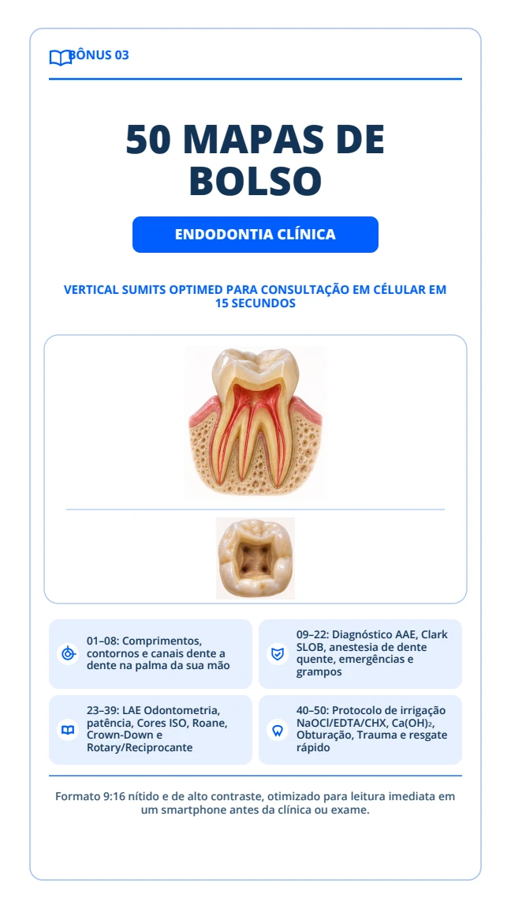
50 MAPAS DE BOLSO DE ENDODONTIA
Cartões verticais resumidos e adaptados para a tela do celular com aberturas, comprimentos médios, diagnóstico e protocolos rápidos.
Valor: R$ 27,00GRÁTIS
⏰ ÚLTIMA OPORTUNIDADE — A OFERTA TERMINA HOJE
Garanta seu acesso completo com desconto
ATLAS VISUAL DE ENDODONTIA CLÍNICA
+120 ATLAS Visuais de Endodontia Clínica com aberturas coronárias, diagnóstico, limas, irrigação, obturação e etapas organizadas para estudo e consulta rápida
- +120 ATLAS Visuais de Endodontia Clínica (10 Módulos)
- Anatomia pulpar, Vertucci, istmos e canais em 'C'
- Diagnóstico pulpar e periapical (Consenso AAE)
- Anestesia em dente inflamado e técnicas suplementares
- Isolamento absoluto, grampos e reconstrução pré-endo
- Abertura coronária dente a dente (anteriores, pré-molares e molares)
- Localização do canal MV2 (MB2) e leis de Krasner-Rankow
- Odontometria eletrônica (LAE), Ingle, patência e Glide Path
- Step-Back vs. Crown-Down e Forças Balanceadas de Roane
- Instrumentação rotatória contínua vs. reciprocante em NiTi
- Irrigação (NaOCl, EDTA 17%, Clorexidina 2%) e ativação PUI
- Medicação intracanal com Ca(OH)₂ e selamento duplo
- Obturação lateral, termoplastificada, cone único e biocerâmicos
- Traumatismo dentário (IADT), ápices incompletos e revascularização
- Retratamento, perfurações, degraus e cirurgia parendodôntica
- Biblioteca em alta definição para celular, tablet, PC e impressão
- Acesso imediato e vitalício + 7 dias de garantia
- 🎁 BÔNUS 01 — Atlas Visual de Erros e Acidentes em Endodontia
- 🎁 BÔNUS 02 — Guia Visual de Limas, Brocas e Grampos de Isolamento
- 🎁 BÔNUS 03 — 50 Mapas de Bolso de Endodontia
DE R$ 97,00
Hoje por apenas:
R$ 27,90
Pagamento único via Pix ou Cartão
Você economiza R$ 69,10 hoje
QUERO O ACESSO COMPLETO AGORA
🛡 GARANTIA INCONDICIONAL DE 7 DIAS
Você tem 7 dias de garantia incondicional. Após a compra, você poderá acessar e avaliar todo o material. Se considerar que o conteúdo não corresponde ao apresentado nesta página, poderá solicitar o reembolso total pela plataforma de pagamento.
COMPRE AGORA E RECEBA SEU ACESSO IMEDIATAMENTE
1. Faça sua compra
Garanta seu acesso completo e finalize seu pagamento de forma 100% segura.
2. Receba o material
Após a confirmação do pagamento, você receberá as instruções de acesso no WhatsApp e no e-mail informados durante a compra.
3. Encontre o tema
Abra o Atlas Visual e escolha o conteúdo de Endodontia Clínica que deseja estudar ou revisar.
4. Consulte e revise
Visualize aberturas, diagnósticos, limas, irrigantes e sequências de forma organizada sempre que precisar revisar o assunto.
PERGUNTAS FREQUENTES
Preciso ter experiência prévia em Endodontia?
Não. O material foi organizado para facilitar a consulta tanto de quem está tendo os primeiros contatos com a pré-clínica e clínica de Endodontia quanto de quem já estudou os conteúdos e deseja revisar rapidamente.
Serve para estudantes de Odontologia?
Sim. O Atlas foi desenvolvido especialmente como material educativo visual de consulta rápida para estudantes de Odontologia na pré-clínica, clínica e provas.
Serve para recém-formados e clínicos gerais?
Sim. Recém-formados e clínicos que desejam revisar aberturas coronárias, diagnóstico, protocolos de irrigação ou manejo de urgências podem utilizá-lo como biblioteca de consulta rápida no consultório.
O conteúdo é um curso em vídeo?
Não. O Atlas Visual não é um curso em vídeo longo. É uma biblioteca digital com +120 mapas e pranchas visuais clínicas prontas para estudo, revisão e consulta em segundos.
Mostra a abertura coronária e a anatomia de cada dente?
Sim. Inclui pranchas específicas dente a dente (incisivos, caninos, pré-molares e molares superiores e inferiores), com comprimentos médios, número de canais, forma de contorno e localização do MV2.
Inclui os critérios de diagnóstico pulpar e periapical?
Sim. Conta com um módulo completo baseado na classificação da AAE (polpa normal, pulpite reversível, irreversível, necrose, periodontites apicais e abscessos) e testes clínicos.
Explica as técnicas de instrumentação e irrigação?
Sim. Você encontrará comparações visuais entre Step-Back e Crown-Down, forças balanceadas, sistemas rotatórios vs. reciprocantes, e irrigação com NaOCl, EDTA e clorexidina.
Mostra as limas ISO, brocas e grampos de isolamento?
Sim. Tanto no Atlas quanto no Bônus 02 você tem o catálogo visual com cores e calibres ISO de limas, brocas Gates-Glidden, Largo, Endo-Z e a numeração de grampos para cada dente.
Aborda erros e acidentes como degraus ou perfurações?
Sim. O acesso inclui pranchas sobre acidentes e ainda o Bônus 01 dedicado integralmente a prevenir e resolver degraus, perfurações, fratura de limas e extravasamento de hipoclorito.
Posso acessar pelo celular?
Sim. Você pode consultar pelo celular, tablet ou computador a qualquer momento, inclusive offline.
Posso imprimir o material?
Sim. Os arquivos estão em alta resolução (PDF) e prontos para você imprimir as páginas que desejar para uso próprio.
Como recebo meu acesso?
Imediatamente após a confirmação do pagamento, você receberá as instruções de acesso no seu e-mail e WhatsApp cadastrados na compra.
O acesso é vitalício?
Sim, você tem acesso vitalício a todos os arquivos e bônus incluídos e pode baixá-los em todos os seus dispositivos.
Existe alguma mensalidade?
Não. É um pagamento único de R$ 27,90, sem cobranças recorrentes.
O material substitui aulas, livros ou orientação dos professores?
Não. O Atlas Visual tem finalidade exclusivamente educativa e complementar, e não substitui aulas, literatura científica, diretrizes clínicas oficiais, orientação docente nem o julgamento clínico profissional.
Existe garantia?
Sim. Você dispõe de 7 dias de garantia incondicional para conhecer o material e solicitar o reembolso pela plataforma de pagamento caso não fique satisfeito.
COMECE AGORA
Tenha no seu celular uma biblioteca com mais de 120 ATLAS Visuais de Endodontia Clínica, com aberturas coronárias, diagnóstico, limas, irrigação, obturação e etapas organizadas para você estudar, revisar e consultar rapidamente sempre que precisar.
Mariana S.
São Paulo, SP
Acabou de garantir o acesso ao Atlas Visual de Endodontia Clínica. Compra concluída agora.
há 1 min